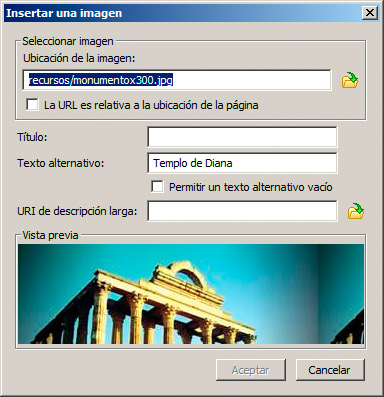
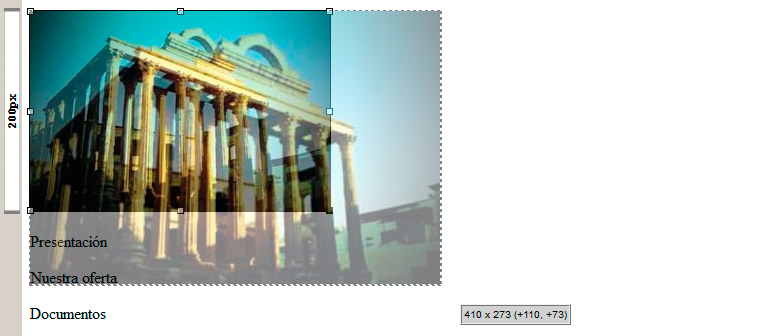
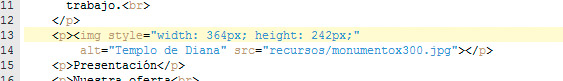

La inserción de una imagen con un editor como BlueGriffon resulta extremadamente sencilla. En el menú Insertar seleccionamos la opción Imagen. Aparecerá el cuadro de diálogo de la figura:

En la parte superior debemos indicar la ubicación de la imagen. De nuevo hay que recordar que, para que las direcciones se generen como relativas, previamente debemos haber guardado la página web.
En el cuadro Texto alternativo estableceremos el contenido del parámetro alt, es decir, una descripción breve de la imagen.
Los otros dos cuadros se emplean para añadir información extra en el caso de Título (algunos navegadores muestran esta información como un mensaje emergente) y para indicar una dirección donde mostrar información extendida. Esta última opción no funciona en casi ningún navegador en la actualidad, por lo que no nos molestaremos en rellenarla.
En conclusión, sólo indicaremos la dirección de la imagen, un texto alternativo y haremos clic en Aceptar.
En este momento, la imagen se mostrará en nuestra página web con su tamaño original. Se habrá insertado en el punto en el que estuviese el cursor. Si lo necesitamos, podemos desplazarla a otra posición de la página haciendo clic sobre ella y arrastrando el ratón hasta su nueva posición, mientras mantenemos presionado el botón.
Editar la imagen
Si queremos cambiar la imagen o modificar el texto alternativo, podemos hacer doble clic sobre la imagen para editarla. También podemos, obviamente, hacer clic en el botón source de la parte inferior y modificar el código fuente de la página directamente.
Modificar el tamaño de la imagen
Al hacer clic sobre una imagen, veremos que aparecen unos pequeños cuadros alrededor de la imagen, como se muestra en la figura. Arrastrando estos cuadros, podemos modificar sus dimensiones.

Ya hemos comentado que los cambios de dimensiones se deberían realizar siempre con un editor de imágenes, pero en ocasiones esta opción nos puede sacar de un apuro.
Al modificar el tamaño de una imagen, es interesante ver cómo se refleja dentro de la etiqueta img. Accediendo a la zona de código fuente mediante la opción source, podemos ver que los cambios han provocado que se incorpore el parámetro style para recoger, mediante estilos css, los cambios en los valores de anchura (width) y altura (height). Si queremos afinar esos valores todavía más, podríamos hacerlo con facilidad cambiándolos en el código fuente.
Modificar la ubicación de la imagen
Estamos dejando para más tarde el trabajo con estilos, pero podemos apuntar algún detalle al respecto. Si quisiéramos modificar la ubicación de la imagen, podríamos seleccionarla y modificar los valores del grupo Posición y distribución del panel Propiedades de estilo, que se despliega haciendo clic en Paneles>Propiedades de estilo. Con esa opciones podemos modificar la flotación de la imagen, añadir algún desplazamiento, etc. Puedes probar a modificar algunos valores y ver cómo va modificándose la posición de la imagen.

Más adelante analizaremos el significado de cada una de esas opciones.
Nota
Añadir un enlace a la imagen
Puede parecer una cuestión trivial pero, si quisiéramos que la imagen sirviera como enlace a otra página web, nos bastaría con hacer clic sobre ella para seleccionarla y, a continuación, pulsar en el botón Enlace (o seleccionar Insertar>Enlace). Así aparecería el cuadro de diálogo necesario para que indiquemos la URL que nos interese.